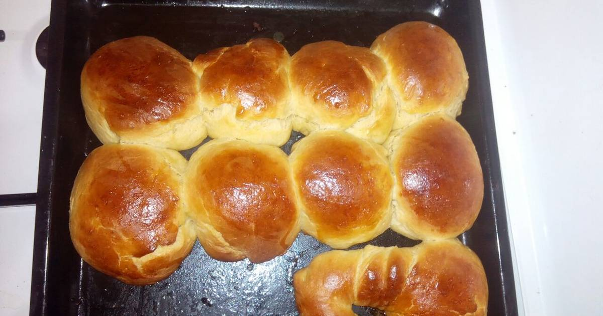

Scones Bread
|

|
- SpogeCake ingredients:
-
- Sugar
- Eggs
- CornFlour
- water
- Maidaa
|
How to prepare Scone Bread Has Given Below:
- Take a bowl add butter then whisk it. Add powder sugar, vanilla extract, half an egg, milk, mix it well then add all purpose flour, mix it like a soft dough.
- Take corn flakes in a plate and crush them. Dust the hands with flour and divide the equal portions make a dumplings and each dumpling, dip it in the milk then put it in the corn flakes and rotate it,
- Arrange the dumplings in the tray and bake them at 180 degree centigrade for 15 minutes.